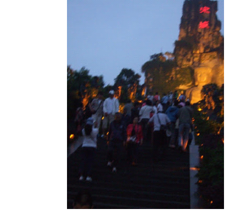
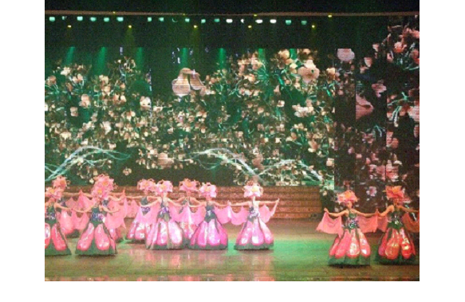
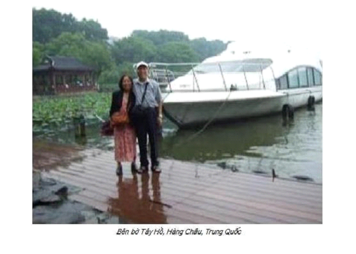
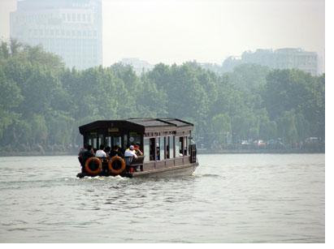
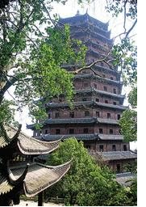
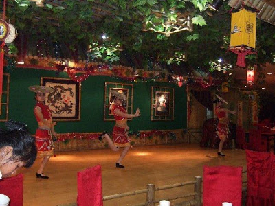

- 13 -

ường vào Tống Thành

Ngay giữa cổng Tống Thành treo hàng chữ: “Hãy cho tôi 1 ngày, tôi sẽ trả lại 1.000 năm”. Đến Tống Thành, du khách thưởng thức món ăn thời xưa, vào tửu quán có chổi rơm treo cửa, được uống rượu Thấu Bình Hương, rượu mà Võ Tòng uống say đấm chết hổ ở đồi Cảnh Dương theo dã sử 108 vị anh hùng Lưong Sơn Bạc, tận mắt ngắm nhìn trang phục thời Tống, xem show diễn “Tống Thành thiên cổ tỉnh”, đặc sản Hàng Châu. Vé khá đắt, 280 Nhân dân tệ (#50 Mỹ kim) nhưng không thể bỏ qua. Cậu Nam cười, tán du khách:
-Các bác bỏ ra 280 nhân dân tệ để được ngắm 300 mỹ nữ Tô-Hàng, 1 cô chưa đến 1 tệ, rẻ quá còn gì nữa!
Đó là một chương trình hoành tráng với kỹ xảo hiện đại áp dụng 4D, do chính đạo diễn tài danh Trương Nghệ Mưu dàn dựng đã làm hài lòng khán giả trong và ngoài nước.

Một cảnh trong “Tống Thành thiên cổ tỉnh”
Những ngày ở Tô - Hàng, chúng tôi đi thăm quan Tây Hồ, Tháp Lục Hòa, cửa hàng tơ lụa Tô Châu. Mỗi nơi một vẻ đẹp đặc sắc, khó quên.
Một góc Tây Hồ



Tháp Lục Hòa
Tour du lịch nào cũng kết hợp đưa du khách đi mua sắm (xuất khẩu tại gia), người dẫn tour thường “nhiệt tình” quảng cáo (hưởng phần trăm hoa hồng), nhưng Nam khác hẳn, trước khi vào các trung tâm dịch vụ du lịch, anh nói nhỏ, căn dặn chúng tôi “cần thiết lắm mới mua, ở đây giá cả trên trời”.
Chiều hôm sau chúng tôi đến cửa hàng bán ngọc trai nước ngọt. Người phụ trách giới thiệu kỹ nghệ nuôi trai lấy ngọc, anh lấy dao mổ con trai to bằng bàn tay. Tách đôi vỏ trai, bên trong là những hạt ngọc trai màu hồng hồng còn nhỏ lắm, to hơn hạt cườm một chút, anh bảo:
-Có được những hạt trai nhỏ này chúng tôi phải nuôi 3 năm. Những hạt trai quá bé không làm đồ trang sức được, chúng tôi nghiền ra làm kem dưỡng da và kem chữa bỏng.
Sau khi giới thiệu về nghề nuôi trai nước ngọt, họ đưa chúng tôi vào các quầy bán ngọc trai, đủ loại màu sắc, từ trắng, trắng ngà, hồng hồng và hồng thẫm, các loại thời trang phụ nữ, với giá trên trời. Sau gần nửa giờ, túi du khách vẫn đóng, họ bắt đầu “khuyến mại”, mua vòng đeo cổ tặng vòng đeo tay, hoa tai. Các bà bắt đầu móc hầu bao.
Sau màn bán ngọc trai, họ giới thiệu các loại kem dưỡng da, sản phẩm từ ngọc trai với giá khuyến mại, mua 5 tặng 1. Cuối cùng đến cửa hàng thuốc Đông dược kế bên.
Người phụ trách giới thiệu nền y học cổ truyền Trung Hoa, tên tuổi những danh y nổi tiếng Hoà Đà, Biển Thước, sau đó đưa chúng tôi vào phòng tiếp thị.
Buồng tiếp thị khoảng 20 mét vuông, mỗi bên kê 4 hàng ghế dài, bàn kê chính giữa, bên phải một kệ hàng đầy hộp kem chữa bỏng, bên trái dưới nền nhà một lò than hồng, lửa cháy lem lém nung đoạn giữa chiếc xích dài hơn 1 mét. Anh Đĩnh người tiếp thị, sau khi giới thiệu kem chữa bỏng đặc hiệu, hai thanh niên từ phía sau, tay đeo găng chống nóng, mỗi người một đầu, nhấc dây xích đưa đến trước chúng tôi. Đĩnh giơ bàn tay trái lướt thật nhanh qua đoạn xích nóng, rồi xòe cho chúng tôi xem. Lòng bàn tay phía ngón cái đen đen (do muội than?), miệng xuýt xoa như bị bỏng nặng. Lập tức tay phải lấy kem xoa xoa vào vết “bỏng” bàn tay trái. Khoảng 2 phút, anh xòe bàn tay “bỏng” cho mọi người xem, coi như đã khỏi! Tôi chả tin thứ thần dược ấy. Đây chỉ là trò ảo thuật, ấy thế mà 8 vị giáo viên khu tập thể trường Đại học Sư phạm Cầu Giấy gật đầu tin sái cổ, mở ví và hầu bao mua mỗi người vài lọ làm quà với giá 150 tệ/lọ 50 gram (1 Mỹ kim # 6, 7 tệ).
Tiếp theo, màn trình diễn bắt mạch kê đơn miễn phí. Tôi nói nhỏ với hai bác ngồi bên:
-Thế nào sau khi bắt mạch ‘giáo sư’ cũng sẽ phán đàn ông thận hư (yếu), phụ nữ can hỏa (gan nóng) cho mà xem!
Sau khi giới thiệu tài năng, đức độ của giáo sư nhà thuốc, hai “giáo sư” từ phía cửa đi vào, anh Đĩnh nói:
-Xin bà con cho một tràng vỗ tay!
Hai “giáo sư” trên dưới 50, áo choàng trắng, kính trắng, vui vẻ bước vào 2 phòng chẩn mạch, trong tiếng vỗ tay của chúng tôi. Anh tiếp thị, bảo:
-Bác nào vào muốn khám, xin mời giơ tay.
Chưa ai kịp giơ tay, tôi đã đứng lên xin khám. Tôi muốn thử tài “Hoa Đà” có chẩn đoán ra “vụ lăn kềnh” trên máy bay của tôi không.
Trong phòng mạch, còn có anh phiên dịch, “giáo sư” mời ngồi ghế kế bên. Tôi đặt tay trái lên chiếc gối nhỏ, ông không “vọng, văn, vấn thiết” (thần, sắc, hình, thái) theo đúng phương pháp chẩn bệnh của thày lang mà đặt ngay 3 ngón vào cổ tay tôi, khoảng chừng 2 phút, hỏi:
-Có hay đau sau gáy không?
Khi ngủ gối đầu sai tư thế, mỏi cổ, đau gáy, chuyện ấy bình thường, đâu có phải là bệnh. Tôi bảo:
-Không có.”
Ông hỏi tiếp:
-Đêm, dậy đi tiểu mấy lần?
-Thường thường yừ 1 đến hai lần.
Ông xì xồ một chập, anh phiên dịch bảo:
-Giáo sư bảo ông bị thận hư.
Tôi phản ứng:
-Tối nào tôi cũng uống 2 lon bia gần 1 lít nước, đêm không dậy đi tiểu mới thận hư chứ.
“Giáo sư” chẳng cần nghe, đưa cho tôi đơn. Anh phiên dịch bảo:
-Bác sang quầy bên cân thuốc.
Bà Liên vào khám, ra khỏi phòng mạch cũng có đơn thuốc trong tay, bà nói:
-Giáo sư bảo tôi can hỏa (gan nóng), huyết áp cao.
Không xét nghiệm máu, nước tiểu, cũng chẳng cần siêu âm, chiếu chụp X quang, không nghe tim phổi, đo huyết áp… chỉ cần đặt 3 ngón lên cổ tay bệnh nhân trong 2 phút mà tìm ra bệnh? Hoa Đà tái thế cũng không bằng! Chúng tôi chả ai tin, không ai sang quầy cắt thuốc theo đơn “giáo sư” kê.
Là bác sĩ của bệnh viện tôi hiểu quá rõ mấy ông lang băm, lang vườn ở Việt Nam cũng như Trung Quốc. Trong cuốn Đời Tư Mao Trạch Đông của bác sĩ Lý Chí Thỏa do tôi chuyển ngữ, xuất bản tại Hoa Kỳ năm 2011, Mao Trạch Đông chẳng bao giờ tin thày thuốc đông y mặc dù ông kêu gọi nhân dân Trung Quốc sử dụng đông dược. Tôi gặp một anh có đứa con trai bị đau ruột thừa ở Hà Nội, đáng lẽ phải đưa đến Bệnh viện St. Paul (Xanh-pôn) để mổ, nhưng ông bố vợ là lang băm, cam đoan cho uống vài thang thuốc sẽ khỏi. Ai ngờ sau 3 ngày, ruột thừa viêm tấy vỡ mủ, anh ta đành đưa con vào Bệnh viện Việt Đức mổ cấp cứu. Cháu bé bị viêm phúc mạc nặng, cái chết đang cận kề, may được các bác sĩ khoa nhi Việt Đức nhiệt tình cứu giúp. Nhưng vì bị viêm phúc mạc nên sau mổ thường bị dính ruột, cháu phải mổ đi mổ lại nhiều lần. Một lần anh ta đưa con đến tôi, nhìn thành bụng cháu bé sẹo chằng chịt trông thật đáng thương. Các ông lang bà mế thường quảng cáo thuốc gia truyền để lừa người nhẹ dạ cả tin.
Năm 2004, vợ chồng tôi lên Hòa Bình thăm anh em cũ, đến nhà anh lái xe cấp cứu Trần Gia Hòa, ngoài cửa có biển đề “Chữa sâu răng gia truyền”. Giời ạ! 15 năm cùng làm việc với vợ chồng anh, anh lái xe cấp cứu, còn vợ anh là cấp dưỡng, biết mẹ gì về thuốc men, bệnh tật. Ấy thế, hai anh chị về hưu đồng lương hạn chế, cuộc sống khó khăn nên tìm cách thu nhập thêm bằng nghề “Chữa sâu răng gia truyền”.
Cũng năm ấy, tôi đến thăm anh bạn lái xe tải của tỉnh mà ngày xưa tôi thường được anh cho đi nhờ về Hải Phòng khi xe anh xuống Hải Phòng chở hàng. Ai ngờ vợ chồng anh mở quầy bán thuốc lá chữa ung thư. Gặp vợ chồng anh, sau 25 năm mừng mừng tủi tủi, tôi hỏi anh chị mở quầy thuốc lá nam này lâu chưa. Anh bảo:
-Nhà em bị ung thư họng, nhờ uống thuốc này của mế Bùi thị Nhổ ở huyện Lạc Sơn, tỉnh Hoà Bình nên chúng em lấy thuốc của bà để mở quầy cứu người bệnh, nhiều người uống thuốc khỏi hẳn, kể cả bệnh viện Ung thư Hà Nội (Bệnh viện K, phố Quán Sứ) trả về.
Tôi cười:
-Sao chú không đề nghị xin giải Nobel về Y học vì đã chữa được bệnh ung thư.
Cậu ta cười trừ.
Trời đất, bịp ai chứ bịp tôi sao nổi, một bác sĩ làm việc ở Bệnh viện Đa Khoa tỉnh Hoà Bình 15 năm, tôi biết rõ về “tay nghề của các lang băm” tỉnh Hoà bình quá rõ.
Năm 1970, theo chỉ thị của Trung ương đảng, yêu cầu ngành y tế phát triển và sử dụng thuốc Nam và các bài thuốc dân trong điều trị cho bệnh nhân. Tỉnh uỷ Hòa Bình chỉ thị cho Ty Y tế, Ty Y Tế chỉ thị cho Bệnh viện Đa Khoa tỉnh Hoà Bình mở khoa Đông Y và phòng khám Đông Y. Người “lang băm” đầu tiên của Bệnh viện Đa Khoa tỉnh Hoà Bình là Nguyễn văn Loan dân tộc Mường, trên 50 tuổi, xã Thịnh Lang, huyện Kỳ Sơn, tỉnh Hoà Bình. Tôi chả biết ông ta học đông y ở đâu, nhưng biết chính xác ông ta là em họ của chủ tịch tỉnh Nguyễn Công Hậu.
Tháng 5-1970, phòng khám Đông Y của ông chính thức hoạt động. Bệnh nhân đến khám, ông giở 1 tờ giấy viết sẵn toa thuốc rồi chép lại giao cho bệnh nhân. Người bệnh nhân cầm đơn thuốc hỉ hả lắm, bởi đơn thuốc ghi: nghỉ 7 ngày, bồi dưỡng mỗi ngày 4 hào và hết thuốc tuần sau khám lại. Bệnh nhân đến khám lại, ông cầm đơn cũ lại chép nguyên xi, cứ thế cho đến khi bệnh nhân chán. Bệnh nhân nào đến, sau khi cũng “bắt mạch” rôi kê đơn, nhưng đặc biệt bệnh gì cũng cùng toa thuốc dài trên 20 vị lá nam. Đến khám Đông Y thường là cán bộ công nhân viên chức có tuổi, bệnh mãn tính như đau xương, mệt mỏi, khó ngủ và… muốn được nghỉ ngơi để làm việc nhà và chạy chợ. Bây giờ vớ được “ông lang băm” cho nghỉ 7 ngày liên tục, ít cũng được 3 tháng, nhiều 6 tháng, lương vẫn lĩnh đủ 100% (với người công tác trên 15 năm) và còn được bồi dưỡng ngày 4 hào, sướng nào bằng. Thuốc mua xong, hóa đơn đưa tài vụ cơ quan thanh toán. còn thuốc sắc uống vài thang thấy không tác dụng, chỉ tội đi đái nhiều, thế là lĩnh thuốc xong vất vào bãi rác cho nhẹ nợ. Một hôm tôi đến gặp ông, thấy ông loay hoay chép lại đơn thuốc cũ cho bệnh nhân. Tôi nói xỏ:
-Sao bác không chép bài thuốc “ra truyền” vào sổ tay để khỏi chép lại đơn cũ có hơn không.
Bùi văn Loan mừng lắm, cám ơn tôi rối rít và từ đó ông thực hiện lời “quân sư” của tôi. Tôi nói với bác sĩ Nguyễn Đức An giám đốc bệnh viện về chuyện này, anh bảo:
-Mình biết chứ, biết làm thế nào. Đây là chỉ thị của Tỉnh uỷ vả lại ông ta là em họ chủ tịch tỉnh, đụng vào là…..
Năm 1973, chả biết Tỉnh uỷ Hoà Bình lấy được đâu ra một tài liệu về cách điều trị các bệnh mãn tính như: Thận, gan, suy nhược thần kinh… yêu cầu Bệnh viện Đa Khoa Hoà Bình triển khai điều trị. Phương pháp điều trị như sau:
-Sáng uống đủ 2 lít nước đun sôi để nguội trong 1 giờ đồng hồ (nước uống ở Việt nam không sạch vì thế phải đun sôi trước khi uống), cả ngày nhịn ăn, khá uống nước
-Sau 15 ngày chỉ uống nước đun sôi, sau đó ăn gạo nức (còn cả cám, ăn cứng và khó ăn) với muối vừng (mè).
Bác sĩ Viện trưởng chỉ thị bác sĩ Vũ Khải và tôi thực hiện đề án này. Tôi với bác sĩ Khải thấy phương pháp điều trị này “phản khoa học”, chúng tôi trình bày với bác sĩ Nguyễn Đức An, Viện trưởng tán thành nhưng bảo:
-Ý kiến của Tỉnh ủy, chúng ta không thể chống được.
Biết kiếm ai ra làm bệnh nhân bây giờ để làm “con chuột bạch”. Tôi bàn với bác sĩ Khải và bác sĩ Viện trưởng, lập hồ sơ toàn các vị trưởng ty, tỉnh ủy viên mời lên “điều trị các bệnh mãn tính”. Các vị lãnh đạo ty, ngành thường có tuổi, trẻ nhất cũng gần 50, ông nào cũng bệnh tật đầy mình, cho nên giấy mời của chúng tôi hoàn toàn “hợp tình, hợp lý và có tinh thần bảo vệ sức khỏe cho cán bộ lãnh đạo”.
Đầu tháng 7-1972, 15 lãnh đạo ty ngành sau khi nhận được thư đến bệnh viện. Trong cuộc họp gồm Viện trưởng, bác sĩ Vũ Khải trưởng khoa nội, 3 y tá tôi đưa ra phương án điều trị:
-Sau khi kiểm tra sức khỏe toàn diện và làm các xét ngiệp cơ bản, chúng tôi lập hồ sơ từng người và lên phác đồ điều trị. Để việc điều trị có kết quả khả quan và tốt đẹp, trong 15 ngày đầu (nhịn ăn, chỉ uống nước đun sôi để nguội), tránh trình trạng gia đình thăm nuôi, chúng tôi dành 2 phòng điều trị ở tầng hai cách biệt và có y tá thường trực 24/24. Sau đó các bác sẽ được ăn gạo nức và muối vừng (mè) trong vòng từ 3 đến 6 tháng, tuỳ theo sự thuyên giảm của bệnh tật.
Nghe tôi phổ biến nội quy và phương trình điều trị, các vị lãnh đạo im lặng không phản ứng gì. Nhưng nhìn ánh mắt, tôi biết các bố “rét”, sợ thấy ông bà ông vải. Tuần sau, tôi nhận được 15 lá thư khước từ vì “công việc ty ngành quá bận, xin hẹn dịp khác, tuy rất muốn tham gia để chữa trị những bệnh lai rai, nhưng lực bất tòng tâm”.
Thế là dẹp. Bác sĩ Viện trưởng tươi cười, bảo:
-Cậu khá lắm.
Đến Hàng Châu, chúng tôi thăm cửa hàng trà xanh, sau khi giới thiệu về nguồn gốc các loại trà nổi tiếng, người phụ trách đưa chúng tôi vào phòng thưởng thức và mua hàng. Hai cô gái khoàng trên dưới 20, xinh đẹp, mặc xường-xám Thượng Hải màu nước biển, nói tiếng Việt còn ngọng, cúi đầu chào: “Chúng em xin chào các anh các chị.”
Chúng tôi nhìn nhau tủm tỉm cười. Láo toét, dám gọi các trưởng lão, bậc cha chú là anh chị. Bác Thành, bác Phú ghé tai tôi:
-Nó rỡn, tụi mình cũng rỡn chơi cho biết mặt.
Thế là chúng tôi vỗ tay thật to, hoan nghênh nhiệt liệt. Hai cô mặt mày rạng rỡ, một cô lấy ấm chén, mở hộp trà pha nước. Cô nói ngọng, giơ lên cao một hộp chè, nói:
-Đây là chè Long Tỉnh, Hoàng Trà, ngày xưa chỉ vua chúa mới được uống. Hôm nay em xin mời anh chị uống thử.
Trà pha xong, cô giới thiệu cách uống trà, cách rót nước, cách cầm ly, rồi cô đưa chén trà lên môi, đột nhiên cô húp đánh xụp một cái, như lợn xục máng cám. Chúng tôi há hốc miệng, mắt tròn xoe, kinh ngạc! Không những thế, cô còn xục xục trà như thể xúc miệng khi đánh răng, sau vài lần ục ục trong miệng, tưởng cô nhổ đi, ai ngờ nuốt đánh ực một cái. Ghê cả người!
Mẹ kiếp! “Rượu khà, trà nhấp”, dám rỡn mặt các cụ! Chúng tôi lại vỗ tay thật to, kéo dài không ngớt! Cô gái cười sung sướng, tưởng chúng tôi thích lắm. Ranh con, dám múa rìu qua mắt các cụ! Nó có biết đâu những người ngồi đây toàn bậc thầy về trà ẩm, đệ tử trà đạo.
Uống trà là một thú chơi thanh đạm, muốn pha một ấm trà ngon cho mình hay cho khách, người ta phải mất nhiều công phu. Trong ấm trà ngon, tao nhân mặc khách, cảm thấy phảng phất đâu đó ý thơ, triết lý của trà đạo. Đâu có cảnh thô tục, tởm lợm như cô gái kia giới thiệu.
Để có được chén trà ngon, bình trà, tách uống phải được làm nóng bằng nước sôi. Khi châm nước (rót nước) lần đầu, người ta chắt ngay, gọi là “cao sơn trường thủy”, chính là thao tác tráng trà nhằm tẩy hết bụi bẩn và cho trà khô thấm nước, khi châm nước lần sau trà không nổi lềnh bềnh.
Lần thứ hai châm nước, “hạ sơn nhập thủy”, nên đổ đầy tràn miệng ấm cho bụi trà tràn ra hết, đậy nắp, dội nước sôi lên trên để giữ nhiệt độ cao. Đợi 1, 2 phút, trà tỏa hết hương vị và mùi thơm mới rót. Khi rót, chắt trà vào chén tống, chuyển sang chén quân, có như thế nồng độ trà các chén mới như nhau.
Dâng trà phải đúng cách, ngón giữa đỡ đáy chén, ngón cái và ngón trỏ đỡ miệng chén, “Tam Long Giá Ngọc”, khi nhận trà và dâng trà người ta thường cúi đầu, cung kính. Trước khi đưa lên môi, đưa chén trà sang trái, mắt nhìn theo, sau đó đưa sang phải, “Du Sơn Thủy Lâm”. Khi uống, cầm chén trà quay lòng bàn tay vào trong, dâng trà lên sát mũi thưởng thức hương trà, sau đó tay che miệng, nhấp nháp từng ngụm nhỏ nhẹ. Cách thưởng thức của đệ tử trà đạo như thế đấy!
Cụ Nguyễn Tuân, bậc thày về trà đạo, nói, “Chỉ có người tao nhã, cùng một thanh khí mới có thể cùng nhau ngồi bên một ấm trà.”
Thưởng thức trà đâu có dễ, ấy thế chả biết người quản lý cơ sở kinh doanh trà cho du khách có hiểu trà đạo và cách dâng trà hay không mà đưa một lũ “oắt con” lên mặt dạy các cụ trưởng lão về trà đạo bằng cách uống trà như lợn tớp cám!
Sau một thôi một hồi quảng cáo các loại trà, pha đủ các loại cho “trưởng lão” thưởng thức, nhưng chẳng ai bỏ ra 1 cắc để mua. Hai cô gái chưng hửng, mặt từ đỏ chuyển sang tái dần, chắc chiều nay sẽ bị “đì” vì không “biết tiếp thị”.
Thăm cửa hàng tơ lụa Tô Châu, rất thú vị, người quản lý đưa chúng tôi xem quá trình sản xuất lụa, từ con tằm ăn lá dâu, trưởng thành làm kén, kéo tơ, dệt thành những tấm lụa tuyệt đẹp, những chiếc chăn tơ tằm nhẹ mà ấm. Cách tiếp thị rất chuyên nghiệp, khéo léo, túi và hầu bao mọi người mở rộng, gia đình nào cũng mua chút quà làm kỷ niệm.
Nhà hàng Tô Châu, Hàng Châu trong khi thưởng thức món ăn còn được nghe các vũ nữ hát làn điệu dân ca, múa dân gian phục vụ thực khách.

Vũ điệu dân gian góp vui cho thực khách
Sau 4 ngày ở Tô Châu, Hàng Châu, xe đưa chúng tôi trở lại Thượng Hải, lên tầu đi Bắc Kinh, về Việt Nam.
Tour du lịch Trung Quốc thật tuyệt vời, tuy ngắn ngủi, nhưng cũng để lại nhiều ấn tượng đẹp trong lòng du khách.
Lâm Hoàng Mạnh.
Bài này đã đăng tải trên Talawas tháng 7-2010.
Sửa chữa và bổ xung 16-6-2018